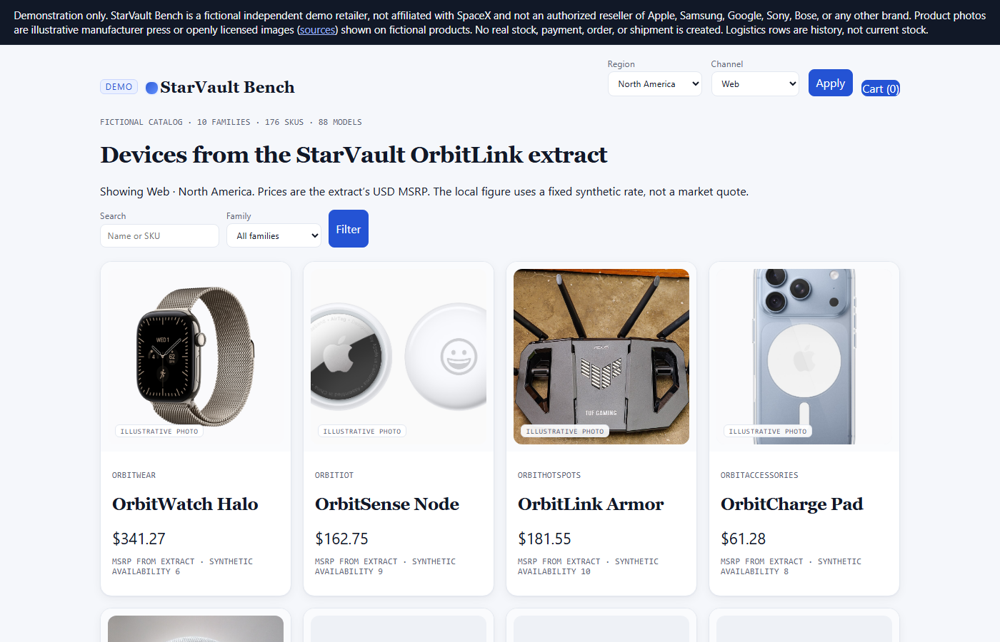

StarVault storefront (static snapshot)
This page is a public static demo of the StarVault light-theme storefront. It is not a live shop. There is no cart, checkout, or payment processing on this host.
Not affiliated with SpaceX, Starlink, or any real company. Catalog figures and imagery are illustrative. Product photos that lacked clear public-use rights were omitted; the preview below is a theme screenshot only.

What this demo includes
- Visual preview of the light-theme storefront UI
- Link to the companion synthetic analytics dashboard
The interactive Node demo (CSV routes, cart cookie POSTs) stays local and is not published here.